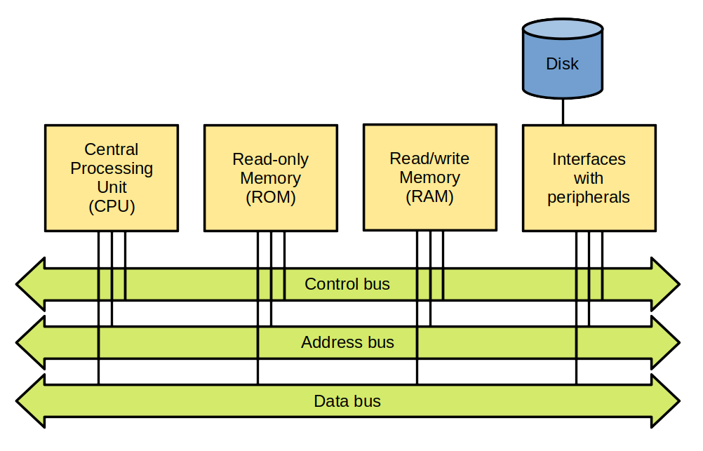
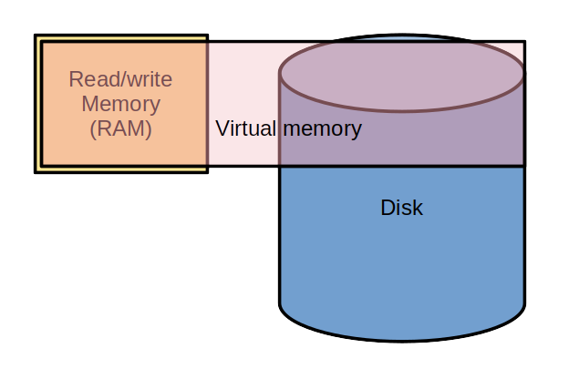
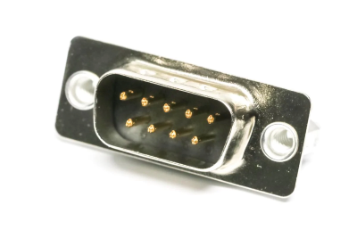
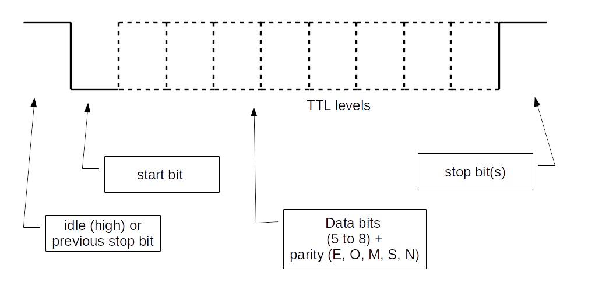
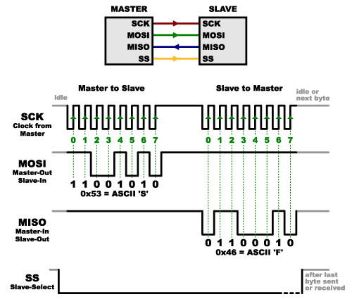

Connected device
Our example

- Handle the sensors: alarm, distance, position...
- Handle communication means
- Handle security
- Handle business aspects
- etc.
More generally:
- Interfacing with peripherals
- Performing processing
⇒ A computer!
Vocabulary used hereafter:
- Connected object = one vehicle of our example
- Connected device = the communicating electronic element installed in the vehicle
Hardware progress
1982 - Cray X-MP
- World most powerful computer
- 0.94 GFLOPS (giga floating-point operations per second)
- Price: around US$15 million (would be US$45 million in 2022)
2022 - iPhone 14

- 1.37 TFLOPS (GPU)
- Price: US$800
In 40 years:
- Processing power multiplied by around 1,400
- Cost divided by around 56,000
What do the years to come have in store?!
Memory, processing power and applications
1969 - The computer that made it possible to land on the Moon

- Weight: aroung 32 kg (without the user interface)
- Power supply: 28 V CC - 70 W
- Permanent memory: 36 Kwords
- Erasable memory: 2 Kwords
- Clock: 1 MHz (83 kHz instruction cycle time)
- Simple operating system, with priority handling
Compared to current configurations:
- Very little memory
- Very little processing power
Yet it allowed to bring human beings to the Moon
Embedded software engineers can make a lot with only a few resources 🙂
A modern microcontroller with similar processing power:

- Permanent memory: 128 Ko
- Erasable memory: 8 Ko
- Clock: up to 64 MHz
- Power consumption: 30 mW (microcontroller alone)
- Power consumption in sleep mode: 0,1 μW
- Price: around US$3.00
Connected device architecture
Reminder: computer architecture
Von Neumann architecture
- Memory stores data and instructions
- Same bus for data and instructions
Harvard architecture
- Separate memory for data and for instructions
- Bus for data and bus for instructions
Variants exist: same memory but separate buses, etc.
Reminder: computer boot process
- The CPU starts executing a short program in ROM: the bootstrap
- The bootstrap loads the boot loader from a disk
- The bootloader loads the Operating System (OS) from a disk

Of course, variants exist!
For a PC running Linux:
- bootstrap: BIOS
- bootloading:
- a first-stage bootloader is read from the Master Boot Record (MBR)
- the first-stage bootloader loads a second-stage bootloader
- the second-stage bootloader loads the Linux kernel
Reminder: virtual memory
Main functions of virtual memory:
- Provide each process with its own address space
- Ensure process isolation
- Ensure OS isolation
- Provide more memory than physical memory
Microcontroller
- A computer in a chip:
- Central Processing Unit (CPU)
- Read-only memory (Flash memory)
- Read/write memory (RAM - Random Access Memory)
- Peripherals and interfaces:
- Analog I/O
- Digital I/O
- Timers
- Serial links
- Serial buses
- Watchdog
- etc.
Read-only memory
- Formerly:
- ROM - Read-Only Memory
- PROM - Programmable Read-Only Memory
- EPROM - Erasable Programmable Read-Only Memory
- EEPROM - Electrically Erasable Programmable Read-Only Memory
- Write: by byte
- Flash memory: a type of EEPROM
- Erase: by block
- Write: by byte
Microcontroller memory

Bootloader
- Allows easy software update
- Waits for binary data, usually provided on a serial link
- Is active only under specific conditions (pins set to some levels)
Note: depending on the µC, a software update may also be performed Over the Air (OTA)
Architecture of a connected device

- Microcontroller
- CPU + memory
- Some peripherals (e.g. timers, watchdog, etc.)
- Interfaces (serial links, serial buses, GPIO, etc.)
- Communication (may be hosted by the microcontroller)
- Optionally:
- Additional interfaces
- Peripherals (sensors, etc.)
- Positioning
- User interface
- Power supply management
- Data storage
- Not depicted: optional, additional memory, outside of the microcontroller
Important device/microcontroller characteristics?
- Depend on the application!
- Example:
- General Purpose Input/Output (GPIO)
- Serial links
- Serial buses (SPI, I2C, etc.)
- Analog to Digital Converters (ADC), Digital to Analog Converters (DAC)
- Analog blocks
- Instruction cycle time
- Memory (size, type, expandable...)
- Registers size (8/16/32 bits)
- Packaging
- etc.
IoT important characteristics
- Integrated communication (Wi-Fi, Bluetooth, LoRaWAN, cellular...)
- Security (secure element, hardware encryption...)
- Sleep modes
- Low cost
- Ecosystem
- etc.
Hardware tools
- Development board
- Programmer, debugger
- Open source hardware
Software tools
- Cross-compilation toolchain
- Integrated Development Environment (IDE)
- Open source software
Support
- Professional support
- Active community (forums, examples...)
Some common microcontroller families used in IoT systems
- Microcontrollers with Arm cores
- ESP8266/ESP32
- Cellular modules
- PSoC
- RISC-V
- PIC
- AVR
- MIPS32
- etc.
Arm
- UK company created in 1990
- there isn't any Arm microcontroller
- Arm provides Intellectual Property (IP) blocks, under a licensing agreement
- among these blocks: RISC microcontrollers cores
- for the IoT (low power, low cost): Cortex-M family
RISC: Reduced Instruction Set Computer
Shipped processors
- end 2020: 180 billions
- including 6.7 billions in Q4 2020
- including 4.4 billions of Cortex-M in Q4 2020
- Sep-2022: more than 250 billions
Arm processor architecture is more popular than any other architecture.
Some Cortex-M licensees:
Arm cores


Instruction sets

Provided elements

Example: STMicroelectronics - STM32 family
STM32L073RZ

- Price: US$6.95 (unit) - US$2.66 (10,000)
Development board

Price: US$13
STM32WL55


- price: US$9.25 (unit) - US$4.54 (10,000)
Development board

US$42
Example: Cypress PSoC 4200 family

Microcontroller block:
- Cortex-M0 core
- Clock: up to 48 MHz
- Memory: up to 256 KB Flash, 32 KB RAM
- USB, CAN
Analog blocks:
- Up to 4 op amp
- A/D converter, up to 1 mega samples/s on 12 bits
- Up to 6 comparators
- Up to 4 D/A converters
- Capacitive sensing
Digital blocks:
- Up to 8 universal digital blocks
- Up to 8 timers/counters/PWM blocks
- Up to 4 serial communication blocks (UART, I2C, SPI)
- Segment LCD drive
Development board
Price: US$19.94
Espressif - ESP family
First, a definition
Soc - System on a Chip
An integrated circuit containing a whole system: for instance, a microcontroller + additional memory + a radio module
Espressif SoC family
- ESP32-S Series
- ESP32-C Series
- ESP32-H Series
- ESP32 Series
- ESP8266 Series
- Announced: ESP32-P Series
Main characteristics (depend on series)
- Single-core or dual-core (Tensilica Xtensa LX7 / Tensilica L106 / RISC-V)
- Wi-Fi 2.4 GHz / Wi-Fi 6 / Bluetooth / Bluetooth Low Energy / IEEE 802.15.4 (Thread / Zigbee)
- Many peripherals
- Vector instructions ⇒ neural network and digital signal processing
- Security
- Low power
- Software Development Kits (IoT, AI, audio, etc.)
- Low cost
Price:
- ESP32-C3FH4 - 4MB Flash - Wi-Fi + Bluetooth LE: US$1.30
Development boards
ESP32-C3-DevKitC-02 - US$8.00

ESP32-EYE - US$19.90
mangOH boards
Update: do not seem supported anymore. A side-effect of the acquisition of Sierra Wireless by Semtech?

mangOH Yellow:
- Programmable cellular communication module
- Design: Sierra Wireless
- Open source schematics
- 2G, 4G, LTE-M/NB-IoT
- GNSS
- Wi-Fi, Bluetooth 5.0
Sensors:
- Accelerometer
- Gyroscope
- Magnetometer
- Pressure, humidity, temperature
- Air quality
- Light
Miscellaneous:
- Battery management
- Expansion card conncetor
- etc.
Software environment:
- Linux
- Very complete library
- Advanced cloud integration (Octave)
Price (unit): around US$ 165
Peripherals
Sensors
- Pressure
- Temperature
- Light level
- Magnetic field
- Gas flow
- Tilt
- Acceleration
- Contact
- etc.
Actuators
- Relay
- Motor
- Stepper motor
- Servomotor
- etc.
Other peripherals
- Printer
- Display
- OBD connector (On-Board Diagnostics)
- RFID tag reader
- etc. etc. etc.
Interfacing
GPIO (General Purpose digital Input Output)

It may be required to add:
- Optocoupler
- Relay
- etc.
Our example:
- Alarm button (input)
- Door opening (input)
- Indication of an ongoing alarm (LED) (output)
- etc.
Analog/digital conversion (ADC)

- Converting a continuous value into a discrete value
- Resolution: number of possible discrete values, or number of required bits
- Sampling frequency: number of conversions per second
- It may be required to amplify the analog signal
- Some microcontrollers include operational amplifiers (PIC16F527, PSoC 4, etc.)
Our example:
- Distance measurement
- etc.
Digital/analog conversion (DAC)

Our example:
- Siren modulation
- etc.
Serial connection
- At least 3 wires: Transmit, Receive, Ground
- Additional wires possible: Request to send, Ready for sending, etc.
- Wires definition: V.24 (RS232 in the USA)
Electrical levels:
- V.28 and RS232 : -15 V to -3 V and +3 V to +15 V
- 0 and 5 V
- 0 and 3,3 V
- Distance (V.28 and RS232): < 15 m
- Maximum speed: 20 kb/s (according to V.28)
- On short distances: 115 kb/s or more
V.28 and RS232 connectors: DB9 or DB25 D-subminiature connectors

For current computers, serial-USB adapters

Data transfer:
Important:
- Each side must be configured in the same way (speed, parity, etc.)
Our example:
- Transceivers control
- Satellite positioning receiver control
- etc.
SPI (Serial Peripheral Interface)
- Synchronous communications: clock and data
- Master/slave (or Main/Subnode)
- 4 wires:
- Clock
- Data, from master to slave
- Data, from slave to master
- Slave selection
- Full duplex

- Master side: one selection wire per slave
- A decoder can be used, or slaves can be chained
- Maximum speed: a few Mb/s
- Maximum distance: a few tens of cm
Our example:
- Display
- etc.
I2C (Inter-Integrated Circuit)

- Synchronous communications: clock and data
- Multi-master
- 2 wires:
- Clock
- Data
- Half duplex
- A master can determine whether the bus is idle or not ⇒ arbitration
Write operation:

Read operation:

- Maximum speed: a few Mb/s
- Maximum length: a few tens of cm
CAN (Controller Area Network)

- Designed for vehicles
- Multi-master
- Bus access: CSMA/CD+AMP (Carrier Sense Multiple Access / Collision Detection with Arbitration on Message Priority)
- Maximum speed: 1 Mb/s
- Maximum distance: a few hundreds of m (for low speed)
Radio
See Communications section
Floating-point arithmetic
Integer ranges
- With
nbits:- Signed integer:
-2n-1 — 2n-1 - 1 - Unsigned integer:
0 — 2n - 1
- Signed integer:
Integer ranges
- 8 bits:
-128 — 1270 — 255
- 32 bits:
-2,147,483,648 — 2,147,483,6470 — 4,294,967,296
Problem
- How to encode:
- Very large numbers?
- Rational numbers (
2/3...)? - Irrational numbers (
...)? - Transcendental numbers (
e...)?
When are those types of numbers needed?
- Calculate (long) distances on Earth's surface
- Many other calculations 🙂
- Some AI algorithms
- etc.
A solution: floating-point representation
sign x significand x baseexponent- The significand controls accuracy
- The exponent controls range
- Base is usually
2
A standard: IEEE 754
- Single precision: 23 bit significand, 8 bit exponent
- Double precision: 52 bit significand, 11 bit exponent
- ...
Actual IEEE 754 format
- Sign: one bit
- Significand: a binary fraction, greater than or equal to
1and less than2. Leading1is assumed and not encoded ⇒ actually 24 or 53 bits - Exponent: biased, so that resulting value is always positive. Bias is
127or1024
Some complexity and side effects
- Two zero values: a positive one and a negative one
- Two infinities
- NaN (Not a Number)
- Quiet NaN (⇒ indeterminate operation)
- Signalling NaN (⇒ invalid operation)
- Denormalized numbers
- Rounding ⇒ a calculation result may be different from the theorical value
Floating-point arithmetic and microcontrollers
- Low-cost microcontrollers: no instructions for floating-point arithmetic
- Other microcontrollers: Floating-Point Unit (FPU)
A software solution when no FPU
Floating-point library:
- Implements floating-point arithmetic in software
- Drawbacks:
- Increases the size of the application
- Increases the number of executed instructions
- May be distributed under paid license
Another solution: use integers only, when possible
Example: calculating a short distance on Earth's surface (up to a few 10s of km)
Software development
Cross development

With the computer:
- Edit source-code
- Cross build (cross compile and link)
- Emulate and debug
With the computer and the microcontroller board:
- Program the Flash memory
- Debug
- Every microcontroller manufacturer: full development environnement
- Often free
- Often based on Open Source software (Eclipse, gcc, etc.)
Execution environments
Operating System - OS
- Mainly: Linux
- Similar to a desktop computer:
- Package manager
- Graphical user interface is possible
Minimum required memory:
- RAM: a few MB or a few tens of MBs
- Depends on applications
Usually:
- RAM: from 512 MB to 8 GB
- Flash card: from 1 GB to 8 GB
- Linux typically requires an MMU (Memory Management Unit) ⇒ virtual memory
- The kernel can be configured to work without one
- Thanks to μClinux project
- Beware about applications compatibility

- Yocto: allows creation of Linux distributions
- balenaOS: Docker containers
- LYNX MOSA.ic: hypervisor
This type of environment targets boards similar to desktop computer motherboards.
Real-Time Operating System (RTOS)
- Allows for a deterministic response time
- Uses very little memory
- No way to add a new application without rebuilding and reflashing
Minimum required memory:
- RAM: a few KB
- Flash: a few KB
- Depends on the application
- FreeRTOS acquired by Amazon
- ThreadX acquired by Microsoft
- Google and Facebook support Zephyr
Available services:
- Threads/tasks
- Synchronization and communication:
- Messages and queues
- Semaphores
- Events groups
- etc.
- Timers
- Memory allocation
- etc.
(Similar to those provided by an OS)
(Very) important difference with an OS: no virtual memory.
- A task may crash another task
- A task may crash the whole application
Provided by the RTOS, or provided as additional services, and (often) required by a connected device:
- Connectivity
- Security
- Storage
- Device management
- Machine learning
Bare metal
- No OS, no RTOS, directly on the microcontroller
- There may be an abstraction layer:
- ⇒ compatibility over a family of microcontrollers
- Arm: CMSIS
- ST: HAL, LL
- etc.
Question: what does the microcontroller do when there is nothing to do?
Answer:
- It loops
- It can also enter a sleep mode (see further below)
Question: and when there is something to do?
Answer: interruptions and background task
Interruption

- The code being executed is interrupted
- Part of the execution context is saved
- A specific code is executed to service the interruption
- The saved context is restored
- The interrupted execution is resumed
Vocabulary
- Code servicing the interrupt: Interrupt Handler, Interrupt Service Routine (ISR)
Question: when is an interruption generated?
Input:
- Input signal goes from a low level to a high level
- Input signal goes from a high level to a low level

Timer:
- A preconfigured duration is reached
- An input signal level changes ⇒ duration provided
- etc.

UART:
- A byte is received
- A byte has been sent
- Parity error for received byte
- A predefined byte is received
- etc.

A/D conversion:
- Ready to convert
- Conversion done
- etc.
etc.
Question: what happens if an interruption occurs while an ISR is active?
Answer: it depends 🙂
- Every interrupt may have a priority level (possibly configurable)
- An interrupt of a higher priority interrupts an ISR servicing a lower priority interrupt
- An interrupt of lower or equal level does not interrupt the ISR; it is saved for later servicing
Usual architecture of an application

- ISR with short execution time
- An ISR stores interrupt information in a dedicated memory zone:
- Interrupt identity
- Values specific to the interrupt (e.g. for the UART: received byte - for the A/D conversion: digital value - etc.)
- An endless loop goes through the memory zones and acts accordingly
Question: why ISR with short execution time?
Answer:
- During ISR execution, one lower-level interrupt will be saved
- If several additional ones occur, they will be lost
More detailed view:

In many applications, there are not a lot of events
Question: how can energy be saved?
Answer: enter a sleep mode between two events

Exiting sleep mode


- Entering a sleep mode is important for devices without external power supply
- Usually, several different sleep modes
- The part(s) generating events must be kept active
At software level
Example: receiving bytes on a serial link
Global variables
bool rec_byte_event = false;
uint8_t rec_byte;
ISR for "byte received" interrupt
rec_byte = get_byte_from_uart();
rec_byte_event = true;
Background task
while (true) {
...
if (rec_byte_event) {
rec_byte_event = false;
// Process rec_byte.
...
}
...
}
What if the background task has sometimes too many things to do, and can't check often enough if a byte has been received?
Some bytes may be lost.
Usual solution:
- The ISR stores received bytes into a buffer
- When it can, the background task processes the contents of the buffer
Beware: the buffer is modified by the ISR (when a byte is received), and by the backgroud task (when bytes are extracted from the buffer)
A good way to handle this: a circular buffer, with atomic access (see further below)
Useful design patterns
Finite Sate Automaton (FSA) or Finite State Machine (FSM)
- abstract machine having a finite number of states
- at a given time, is in one state
- entering a new state (transition) is caused by an event
- a condition may guard a transition
- processing is performed when transitioning
A way to depict an FSM:
FSM example: decoding NMEA 0183 GNSS messages
Message format:

Decoding:
A possible implementation:
current_state = WAIT_DOLLAR;
while (true) {
c = get_character();
switch (current_state) {
case WAIT_DOLLAR:
if (c == '$') {
current_state = WAIT_G;
break;
}
// Other character, stay in this state.
break;
case WAIT_G:
if (c = 'G') {
current_state = WAIT_P;
break;
}
// Other character, go back to initial state.
current_state = WAIT_DOLLAR;
break;
case WAIT_P:
if (c = 'P') {
msg_length = 0;
current_state = WAIT_CR;
break;
}
// Other character, go back to initial state.
current_state = WAIT_DOLLAR;
break;
case WAIT_CR:
if (c == CR) {
current_state = WAIT_LF;
break;
}
// Other character, store into message.
add_to_message(c);
msg_length++;
break;
case WAIT_LF:
if (c == LF) {
process_message(msg_length);
current_state = WAIT_DOLLAR;
break;
}
// Other character, go back to initial state.
current_state = WAIT_DOLLAR;
break;
default:
signal_error(UNKNOWN_STATE);
current_state = WAIT_DOLLAR;
}
}
A real example: handling the connection to a Wi-Fi AP for the ESP32:

Several transitions not drawn, for simplicity sake.
Ring buffer (or circular buffer)
- Array used as an interface between a data producer and a data consumer
- Allows to decouple producer and consumer
- When the producer is more rapid than the consumer: we can choose to loose either the oldest data or the newest data
Typical use case: receiving bytes from a serial link
- a pointer to next data to be read
- a pointer to next available place
- when the end of the array is reached: wrap to start of the array
- ⇒ ring/circular buffer
A possible implementation:
#define BUFFER_LENGTH 64
#define BUFFER_EMPTY -1
uint16_t inIndex;
uint16_t outIndex;
uint16_t dataLength;
uint8_t ringBuffer[BUFFER_LENGTH];
void initBuffer(void) {
inIndex = 0;
outIndex = 0;
dataLength = 0;
}
void putData(uint8_t data) {
ringBuffer[inIndex] = data;
// Move inIndex forward.
inIndex++;
if (inIndex == BUFFER_LENGTH) {
inIndex = 0;
}
dataLength++;
if (dataLength == BUFFER_LENGTH + 1) {
// Overflow. Move outIndex forward.
outIndex++;
if (outIndex == BUFFER_LENGTH) {
outIndex = 0;
}
dataLength--;
}
}
int getData(void) {
if (dataLength == 0) {
return BUFFER_EMPTY;
}
uint8_t dataToReturn = ringBuffer[outIndex];
dataLength--;
// Move outIndex forward.
outIndex++;
if (outIndex == BUFFER_LENGTH) {
outIndex = 0;
}
return dataToReturn;
}
Beware: if the circular buffer is shared between an ISR and the background task, every modification of the circular buffer (array, pointers) must be atomic.
Example: GNSS messages decoding
Of course, FSM and circular buffers may be used with an RTOS or an OS.
Hands-on Lab: STM32

Hands-on Lab: ESP32

Our example
- Which device to choose?
- Processing power
- Memory size
- Interfaces
- Peripherals
- Software?
- OS / RTOS / bare metal
- Remote software update
- etc.
- Detailed information is required
- On peripherals to be handled
- On business functions to be implemented
- Keep some flexibility
- Beware: reducing device and peripherals cost can be expensive later on (see later)
Points to remember
- Embedded device: complex domain
- A mix of analog electronics, digital electronics and computer science
- Software development: very specific
- Rapid progression of hardware
- Long lifetime of systems
- Slow progression of software
- Growing importance of free hardware and software
- Communication adds complexity: see below